Zwycięstwa 28, KoszalinZachód Słońca, MielnoMeduza, Mielno
Nowe budynki, które pasują do starych ulic
Od 1992 roku budujemy, odnawiamy i wynajmujemy obiekty w Koszalinie i Mielnie. Teraz do wynajęcia: lokal przy Rynku Staromiejskim i biura przy ul. Zwycięstwa.
Kamienicy przy Zwycięstwa, w której działała kiedyś restauracja Bałtyk, nie dało się już wyremontować. Rozebraliśmy ją i postawiliśmy w tym miejscu nowy budynek.
Nowoczesny w środku, a z zewnątrz w zgodzie z sąsiednimi kamienicami: kamienna elewacja, witryna na całą szerokość parteru, winda KONE, biura na piętrach.
„Dokładamy wszelkich starań, aby nasze inwestycje były nowoczesne na miarę Europy, funkcjonalne, stylowe i eleganckie oraz dobrze wkomponowane w otoczenie.”
Przesuń zdjęcia, żeby zobaczyć kolejne etapy
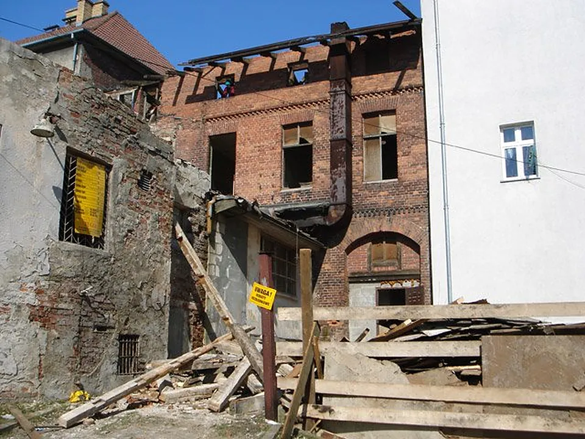
Marzec 2007 rozbiórka starej kamienicy
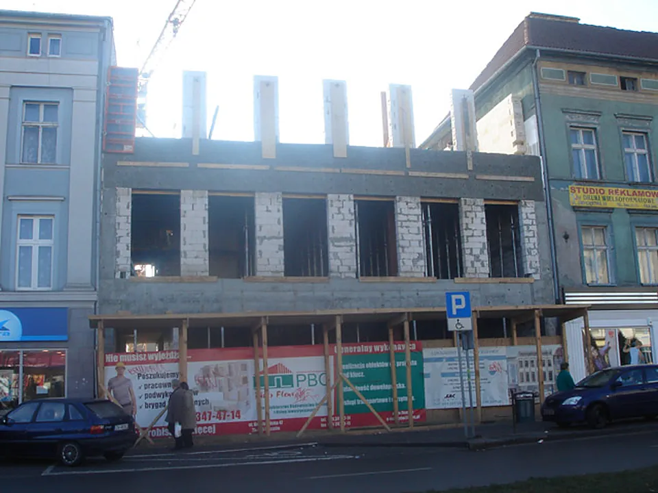
Luty 2008 nowa bryła w linii pierzei
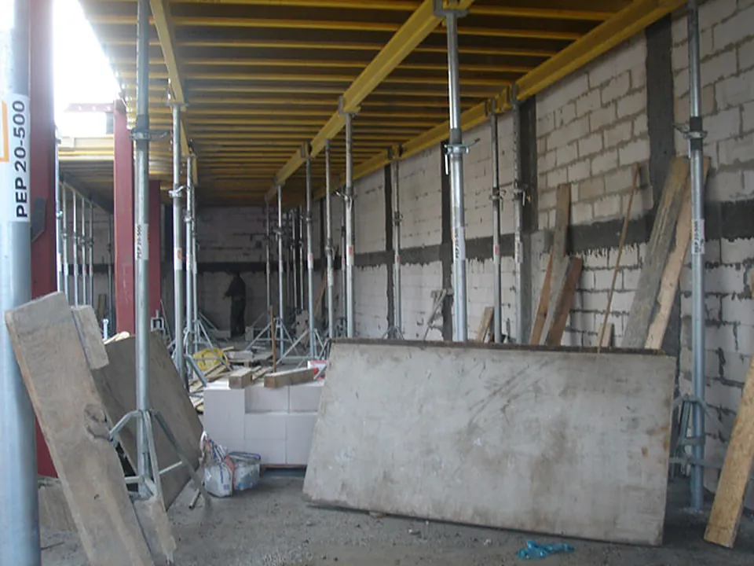
Czerwiec 2008 prace wykończenioweDziś lokal handlowy i biura na wynajem
Zrealizowane inwestycje
Obiekty, które można zobaczyć na żywo w Mielnie i Koszalinie. Zdjęcia w kartach przesuwa się palcem lub myszą.
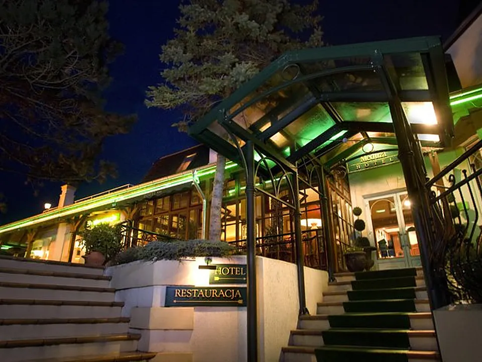
Meduza*** Hotel Restauracja
Mielno · remont 1997
Zabytkowy budynek z początku XX wieku w stylu szwajcarskiego renesansu. Zachowaliśmy bryłę i zamieniliśmy go w hotel z restauracją.
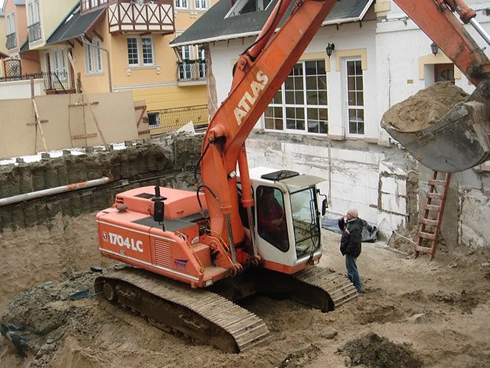
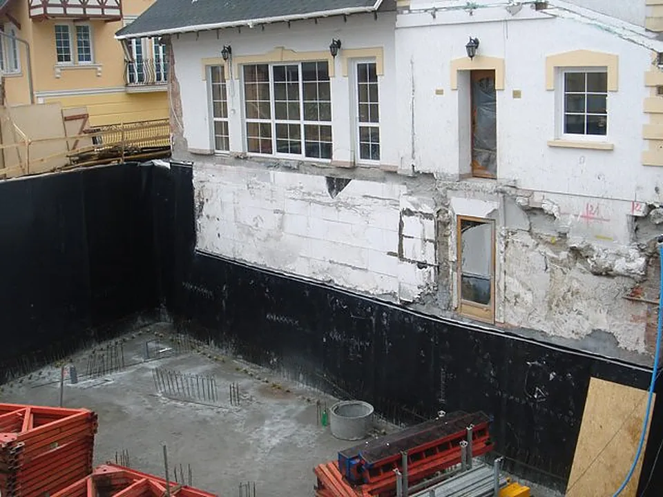
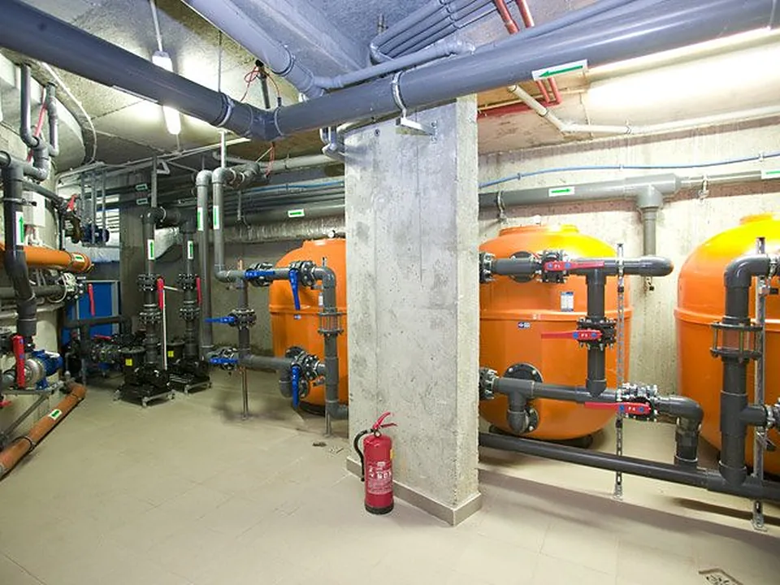
Basen w hotelu Meduza
Mielno · 2005-2007
Basen poniżej poziomu morza pod hotelem stojącym na wydmach. Grunt wzmocniono iniekcją strumieniową według rozwiązania firmy Keller Polska.
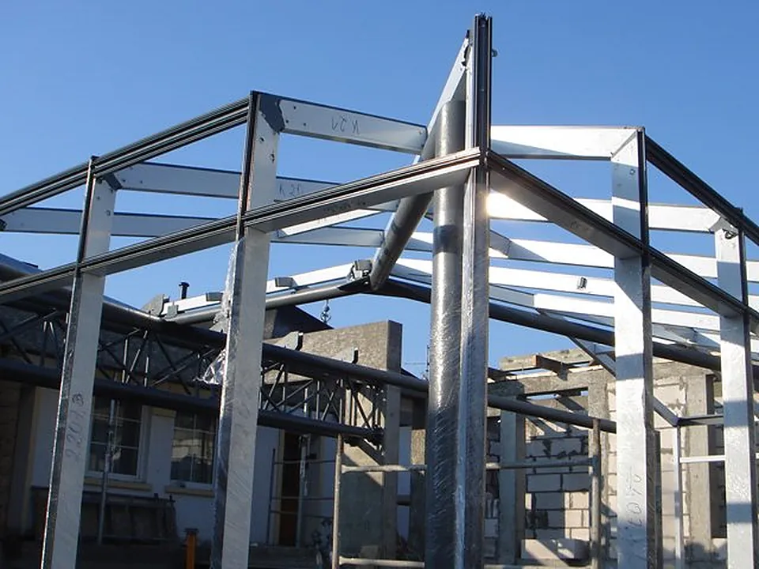
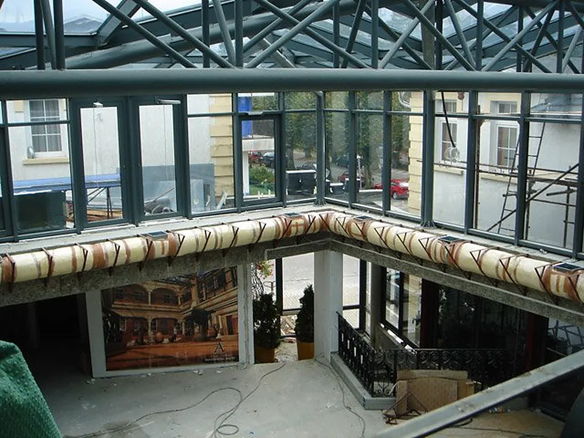
Ogród zimowy nad basenem
Mielno · 2006-2007
Odkryty dziedziniec, czynny tylko w sezonie, dostał przeszklony dach na dużej powierzchni, bez dodatkowych słupów.
Apartamentowiec przy Nadbrzeżnej
Mielno · 2000-2001
Budynek o nietuzinkowej architekturze. W 2001 roku zajął 1. miejsce i zdobył tytuł „Mister Roku 2001”.
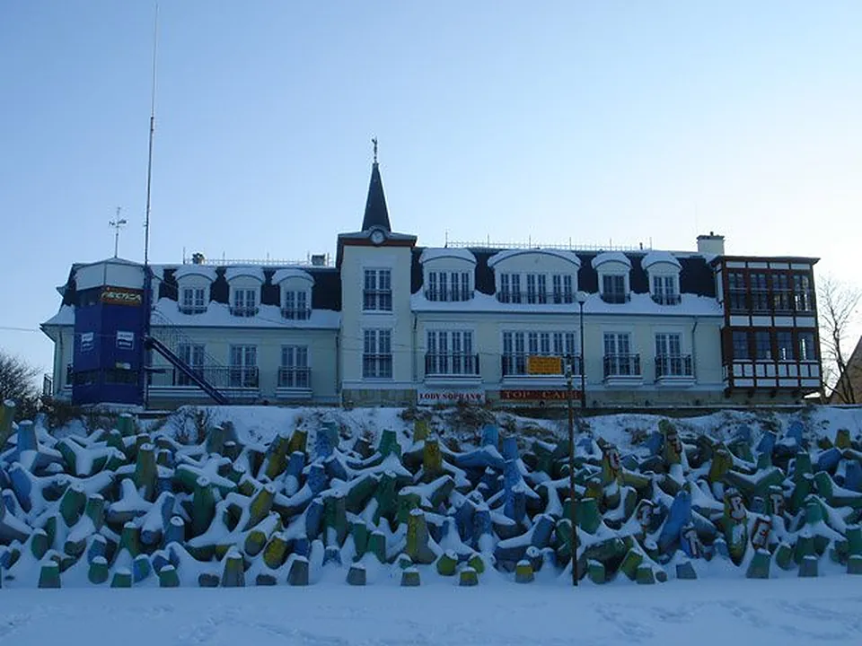
„Zachód Słońca”
Mielno, przy promenadzie · 2004-2006
Nowoczesny apartamentowiec z elewacją nawiązującą do starych kamienic, zaprojektowany razem z architektami.
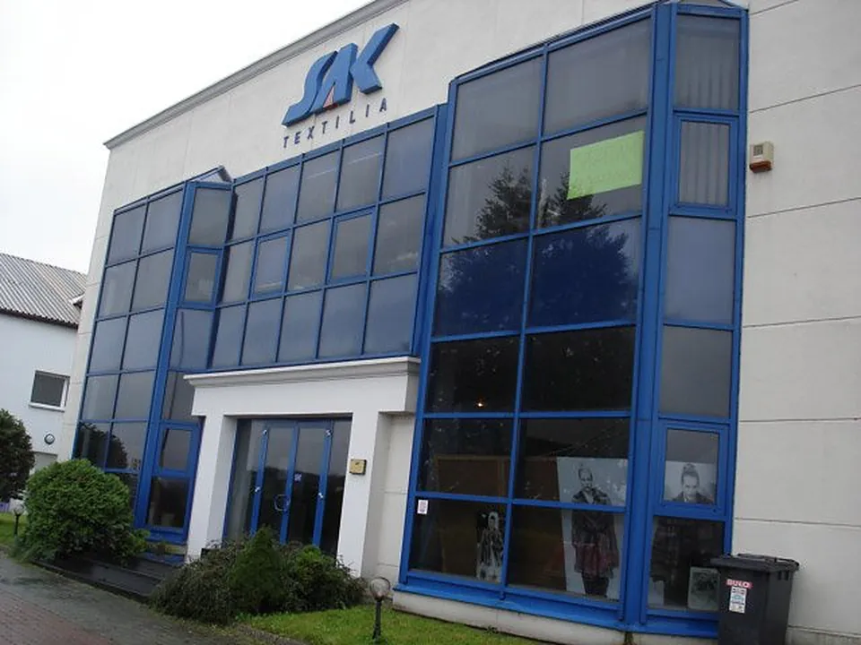
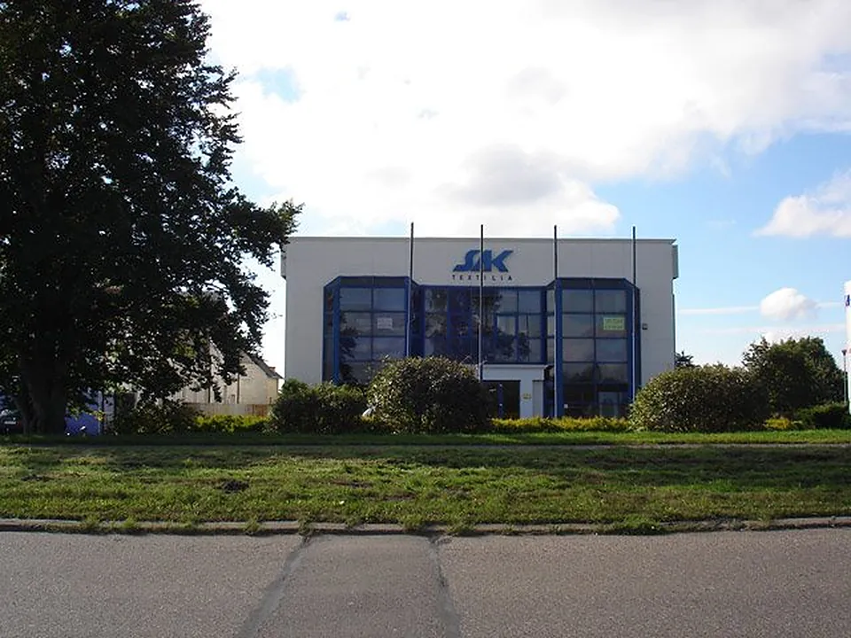
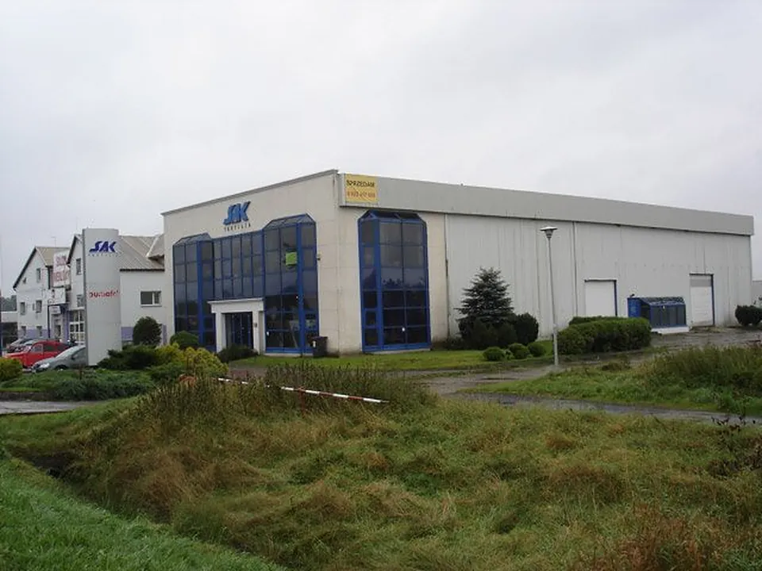
Hala Sak Textilia
Koszalin, trasa na Poznań · 1995
Hala magazynowa wysokiego składowania z częścią biurową, łącznie 1 100 m². Konstrukcja stalowo-murowana.
O firmie
Sak Sp. z o.o. działa od 1992 roku. Siedziba spółki jest w Mielnie przy ul. Nadbrzeżnej 2, a biuro zarządu w Koszalinie przy ul. Zwycięstwa 28, w naszej najnowszej inwestycji.
Budujemy lokale i mieszkania na wynajem i sprzedaż, odnawiamy obiekty zabytkowe oraz szukamy i kupujemy grunty pod kolejne inwestycje. Pracujemy na miejscu: w Koszalinie i nad morzem w Mielnie.
budowa na wynajem i sprzedaż
renowacja obiektów zabytkowych
zakup gruntów inwestycyjnych
Także: szkło do wina Helicium®
Kieliszki do wina, szampana i mocnych trunków projektu Arnaud Baratte'a, wykonane w całości we Francji, odporne na uderzenia i mycie w zmywarce. Docelowo osobna podstrona z pełną ofertą.